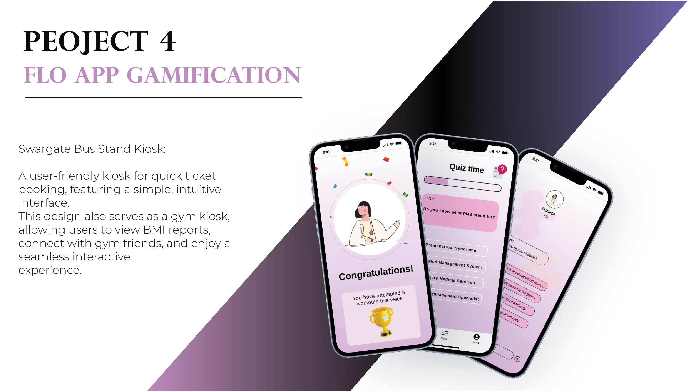
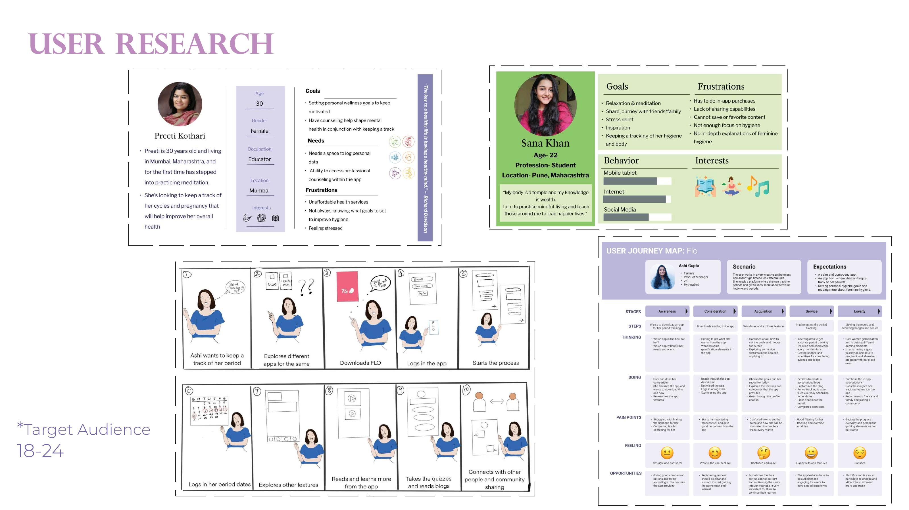
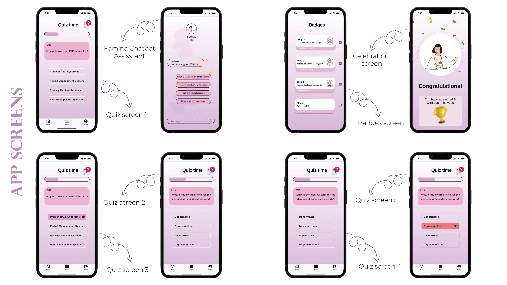

Academic Project · Mobile App Gamification
Flo
A gamification concept for the Flo wellness app — quizzes, chatbot assistant, achievements and badges for an 18–24 audience.

Overview
Engagement through play
This project explores a gamification concept for the Flo app, with a target audience of 18–24. The design introduces interactive features — quizzes, an AI chatbot assistant, celebration screens, and a badges system — to make the app experience more engaging and rewarding.
The visual language uses the Flo brand's soft purple and pink palette, keeping the interface approachable and consistent with the existing product.
Scope
Features designed
Key Screens
Quiz, chatbot & achievement
The quiz sequence presents multiple-choice questions relevant to the user's health cycle. The Femina chatbot provides a conversational assistant experience. Celebration and badge screens reward user engagement and encourage continued use.

Quiz sequence, Femina chatbot, and celebration screen
Research & Context
Target audience & approach
The source portfolio identifies an intended target audience of 18–24. The gamification approach is visible in the designed screens — quiz mechanics, chatbot interaction, and achievement rewards — but specific research findings, testing outcomes, and gamification objectives have not been documented in the available material.

Research context and additional screens
Academic project — the precise research findings, gamification objective, and relationship to the Flo product need confirmation from your original project files. Only what is visible in the screens has been described here.
Next Project
P-Town